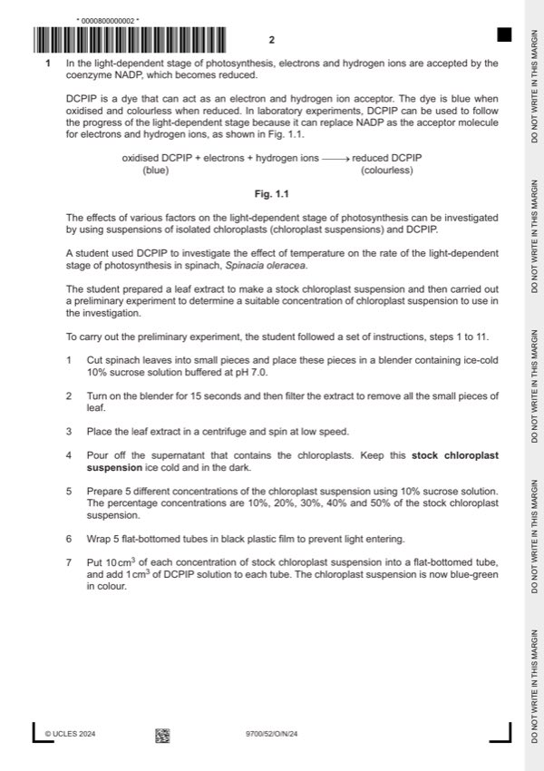

Question 1

Original paper page 2
Part 1(a) — solution
any two from: 2
Mark points
- Include the ideas shown in the solution above.
Part 1 — solution
replace chloroplast (suspension) with, water / boiled chloroplast (suspension) ;
Mark points
- Include the ideas shown in the solution above.
Part 1(b)(i) — solution
Answer: 2
2
percentage
time taken for rate of light-dependent
concentration of
DCPIP to stage of photosynthesis
chloroplast
decolourise / s / s–1
suspension
Mark points
- Correct result: 2
Part 1(b)(ii) — solution
1 axes correctly orientated with labels and rate unit and appropriate scales ; 3
Mark points
- Include the ideas shown in the solution above.
Part 1(c) — solution
any two from: 2
(Did work in 10% sucrose solution because)
Mark points
- Include the ideas shown in the solution above.
Part 1 — solution
(sucrose solution) has, same / similar, water potential as in the chloroplast ;
Mark points
- Include the ideas shown in the solution above.
Part 1(d) — solution
1 one, stated, concentration of chloroplast suspension ; 6
any five from:
Mark points
- Include the ideas shown in the solution above.
Part 1 — solution
description of random / systematic, sampling ;
Mark points
- Include the ideas shown in the solution above.
Part 1 — solution
ref. to data for spring 1929 and spring 1932 ;
Mark points
- Include the ideas shown in the solution above.